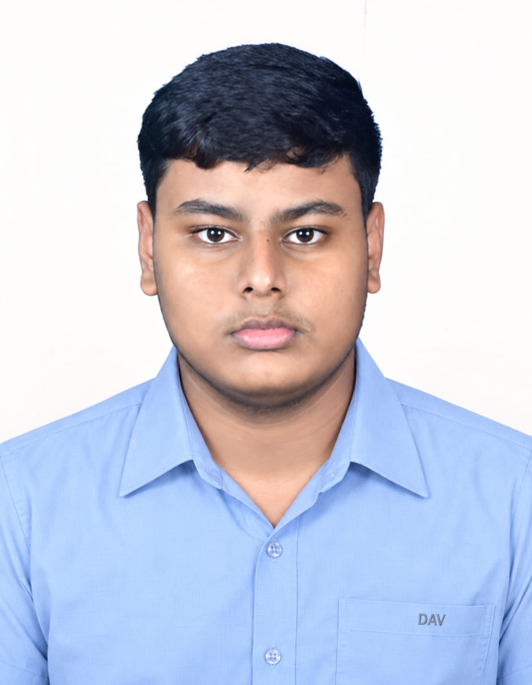

← All projects
AI and IoT · Completed · 2025
SeriScope
SeriScope: A Low-Cost Edge-AI System for Fertility and Disease Assessment of Tassar Silkworm Eggs
Project overview · 01
An offline field tool for earlier assessment.
Pebrine, caused by Nosema bombycis, is a serious threat to sericulture. Conventional diagnosis requires manual microscopic examination of moth body fluid, which can be slow, specialist-dependent and prone to human error.
SeriScope is intended to help grainages identify pebrine earlier and assess egg fertility without requiring an internet connection or a specialist on site.
System · 02
Microscope input to offline prediction.
A microscope camera captures sample images. The system resizes and normalises them, then classifies them as bacteria, non-pebrine or pebrine using models that operate offline on compact hardware.
The interface shows the live feed, predicted class and confidence score. A non-CNN pipeline based on texture and shape features provides a more interpretable, lower-compute cross-check.
- 01Capture
Bright-field microscopy with a digital or USB camera.
- 02Prepare
Resize and normalise each field sample image.
- 03Classify
Run trained models offline on CPU-only hardware.
- 04Explain
Display class, confidence and Grad-CAM evidence.
Research and technology · 03
Model stack
- VGG16, EfficientNet-B0/B3, ResNet-50 and MicroNet
- PyTorch and ONNX Runtime for offline inference
- OpenCV for camera input
- Grad-CAM for explainability
- GLCM, LBP and Hough-transform features with SVM and Random Forest
Field context
Field visits to the Sukinda Silk Farm and grainages provided samples and expert guidance. The published record identifies fluorescence microscopy and DNA-based confirmation such as PCR or LAMP as areas under exploration.
Materials: bright-field microscope, digital or USB microscope camera and embedded CPU-only computing hardware.

Team
Research through collaboration.
Students: Tripathy Divyajyoti Senapati and Suryakanta Lenka
Mentor: Tanmay Kumar Nayak
Related distinctions · 04
From field research to the world stage.
IRIS National Fair
Gold Medal Winner, Cohort 1
Regeneron ISEF
Selected for Team India, Phoenix, USA
Regeneron ISEF
Special Award by Zydus Pharmaceuticals (USA) Inc.